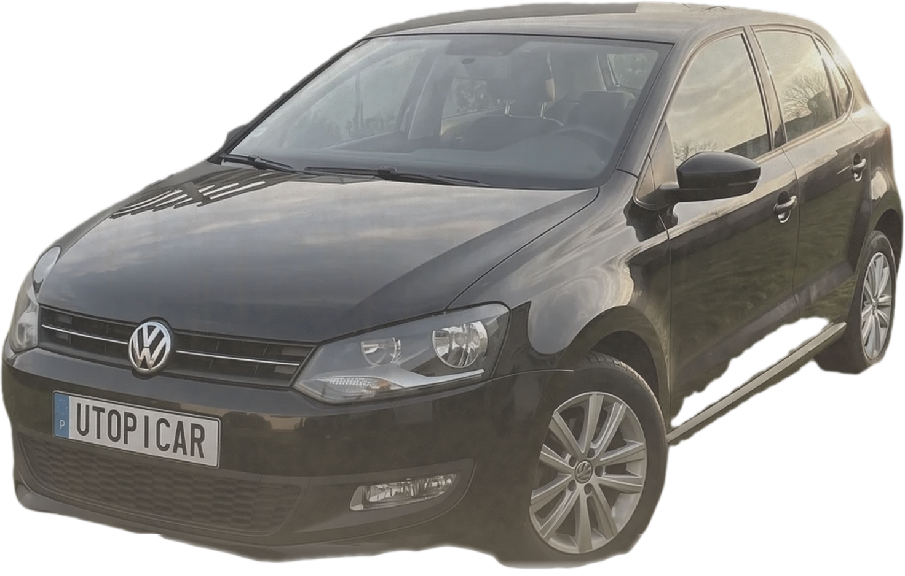

100 €
+ 600 €


Phares jaunis
Rayure
Intérieur sale
Exemple · ordres de grandeur, petite citadine
RAYURE
Remise en état
50 €
Ce qui coûte
ne se voit pas.
Distribution600 €
Exemple · ordres de grandeur, petite citadine
EMBRAYAGE
700 €
En 4e à 50, plein gaz.
Il patine.
Exemple · ordres de grandeur, petite citadine
Personne n'a regardé
sous le bouchon.
Comme neuve
♥ 38 personnes intéressées